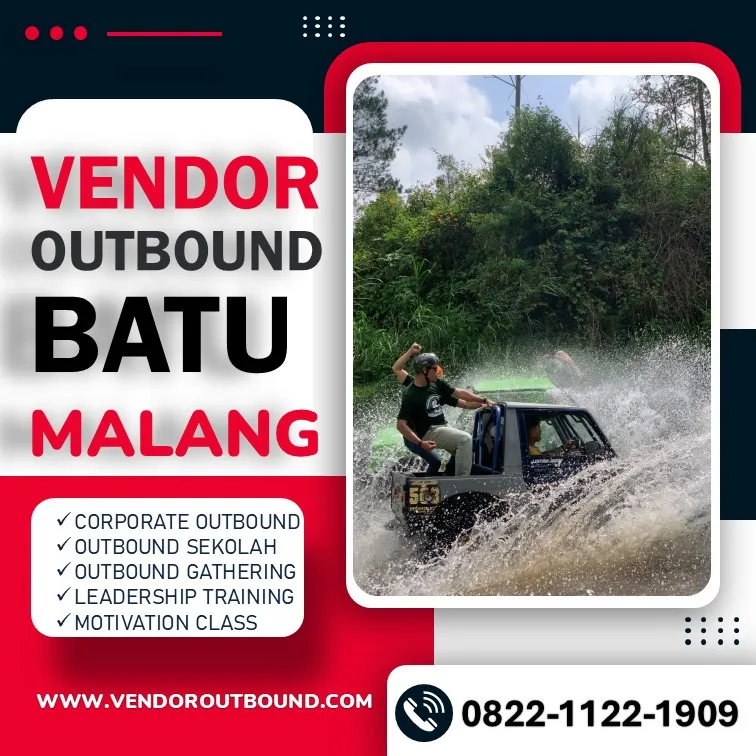
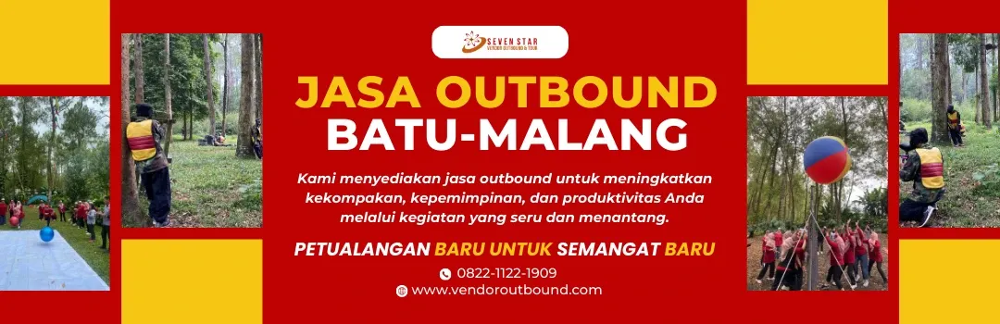
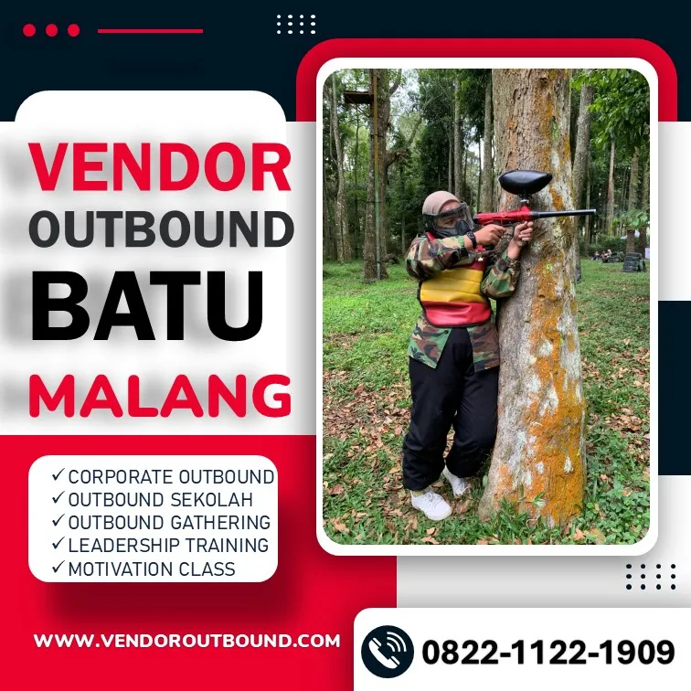

Mengapa Harus Memilih Provider Outbound di Batu Malang?
Kota Batu, yang terletak di dataran tinggi Malang, Jawa Timur, telah lama dikenal sebagai salah satu destinasi wisata dan kegiatan outbound paling populer di Indonesia. Dengan ketinggian sekitar 700-1.700 meter di atas permukaan laut, Batu menawarkan udara sejuk, pemandangan alam pegunungan yang memukau, serta infrastruktur wisata yang sangat memadai untuk mendukung berbagai jenis kegiatan outdoor.
Memilih provider outbound yang tepat di Batu Malang menjadi langkah krusial untuk memastikan kegiatan outbound Anda berjalan lancar, aman, dan mencapai tujuan yang diinginkan. Provider outbound Batu yang profesional tidak hanya menyediakan games dan aktivitas seru, tetapi juga mampu merancang program yang sesuai dengan kebutuhan spesifik setiap klien, baik itu perusahaan, instansi pemerintah, sekolah, maupun komunitas.
Keunggulan Batu sebagai Destinasi Outbound
Batu memiliki beberapa keunggulan utama sebagai destinasi outbound. Pertama, cuaca yang sejuk sepanjang tahun membuat peserta outbound merasa nyaman selama melakukan berbagai aktivitas outdoor. Kedua, keberagaman landscape mulai dari perbukitan, perkebunan apel, hutan pinus, hingga air terjun memberikan pilihan venue yang beragam. Ketiga, aksesibilitas yang baik dengan jarak sekitar 20 km dari Kota Malang dan sekitar 100 km dari Surabaya memudahkan peserta untuk menjangkau lokasi.
"Outbound bukan sekadar bermain di alam terbuka, melainkan sebuah proses pembelajaran experiential yang dirancang untuk mengembangkan potensi setiap individu dan membangun kekompakan tim secara efektif."
📖 Baca Juga
Kriteria Provider Outbound Batu yang Terpercaya
Tidak semua provider outbound di Batu Malang memiliki kualitas dan standar pelayanan yang sama. Oleh karena itu, penting bagi Anda untuk memahami kriteria-kriteria yang harus dimiliki oleh provider outbound terpercaya sebelum memutuskan untuk menggunakan jasanya.
1. Memiliki Legalitas dan Izin Usaha yang Jelas
Provider outbound Batu yang profesional harus memiliki legalitas usaha yang jelas, termasuk SIUP (Surat Izin Usaha Perdagangan), NPWP, dan dokumen legalitas lainnya. Hal ini menunjukkan bahwa perusahaan tersebut beroperasi secara legal dan dapat dipertanggungjawabkan. Selain itu, legalitas juga memberikan perlindungan hukum bagi klien jika terjadi hal-hal yang tidak diinginkan selama kegiatan outbound berlangsung.
2. Tim Fasilitator Berpengalaman dan Bersertifikasi
Fasilitator merupakan ujung tombak keberhasilan sebuah kegiatan outbound. Provider outbound Batu terpercaya harus memiliki tim fasilitator yang tidak hanya berpengalaman, tetapi juga memiliki sertifikasi di bidang outbound, seperti sertifikasi dari organisasi outbound nasional atau internasional. Fasilitator yang baik mampu menghidupkan suasana, memastikan keamanan peserta, dan memberikan debriefing yang bermakna setelah setiap aktivitas.

3. Peralatan Outbound Standar Keselamatan
Keselamatan peserta adalah prioritas utama dalam setiap kegiatan outbound. Provider outbound yang baik harus memiliki peralatan outbound yang memenuhi standar keselamatan SNI (Standar Nasional Indonesia). Peralatan seperti tali karmantel, harness, carabiner, helm, dan alat-alat safety lainnya harus dalam kondisi baik dan diperiksa secara berkala. Jangan pernah mengorbankan keselamatan demi harga yang lebih murah.
4. Portofolio dan Track Record yang Terbukti
Lihat portofolio dan track record provider outbound sebelum memilih. Provider outbound Batu yang terpercaya biasanya memiliki dokumentasi kegiatan-kegiatan sebelumnya, termasuk foto, video, dan testimoni dari klien. Semakin banyak pengalaman yang dimiliki, semakin terampil mereka dalam menangani berbagai situasi dan kebutuhan klien yang berbeda-beda.
Gemilang Katun Outbound: Provider Outbound Batu Pilihan Terbaik
Di antara berbagai provider outbound di Batu Malang, Gemilang Katun Outbound hadir sebagai pilihan terbaik yang telah dipercaya oleh ratusan perusahaan, instansi, dan komunitas selama lebih dari 10 tahun. Dengan pengalaman menangani lebih dari 500 event outbound dan melayani lebih dari 15.000 peserta, Gemilang Katun Outbound membuktikan komitmen dan profesionalisme dalam setiap kegiatan yang ditangani.
Layanan Unggulan Gemilang Katun Outbound
Gemilang Katun Outbound menawarkan beragam layanan outbound yang dapat disesuaikan dengan kebutuhan klien:
- Fun Outbound: Program outbound santai yang menekankan keseruan dan kebersamaan dengan berbagai games menarik untuk semua usia.
- Team Building: Program terstruktur yang dirancang khusus untuk meningkatkan kerjasama tim, komunikasi, dan kepemimpinan dalam organisasi.
- Corporate Gathering: Konsep acara gathering perusahaan yang memadukan kegiatan outbound dengan momen kebersamaan antar karyawan.
- Outing: Program rekreasi outdoor yang menggabungkan kegiatan wisata dan outbound ringan untuk refreshing tim.
- Family Gathering: Kegiatan outbound khusus untuk keluarga besar organisasi yang mengedepankan kehangatan dan keakraban.

Venue dan Lokasi Partner
Gemilang Katun Outbound memiliki kerja sama dengan berbagai venue outbound terbaik di Batu Malang. Mulai dari area outbound di kawasan perbukitan dengan pemandangan pegunungan yang spektakuler, perkebunan apel yang hijau dan asri, hingga kawasan hutan pinus yang teduh dan sejuk. Setiap venue dipilih secara khusus berdasarkan standar keamanan, kenyamanan, dan kesesuaian dengan jenis program outbound yang akan dilaksanakan.
Tips Memilih Provider Outbound Batu yang Tepat
Berikut beberapa tips praktis yang dapat Anda gunakan saat memilih provider outbound di Batu Malang:
- Lakukan riset mendalam: Cari informasi sebanyak mungkin tentang provider outbound yang Anda pertimbangkan, termasuk review dari klien sebelumnya di Google Reviews atau media sosial.
- Bandingkan penawaran: Jangan langsung memilih provider pertama yang Anda temui. Bandingkan setidaknya 3-5 provider untuk mendapatkan penawaran terbaik.
- Tanyakan detail program: Minta provider untuk menjelaskan secara rinci program outbound yang akan dilaksanakan, termasuk jenis games, durasi, dan tujuan setiap aktivitas.
- Cek peralatan keselamatan: Pastikan provider memiliki peralatan outbound yang memenuhi standar keselamatan dan dalam kondisi baik.
- Minta proposal dan kontrak: Provider profesional akan memberikan proposal tertulis dan kontrak kerja sama yang jelas sebelum kegiatan dilaksanakan.

Harga Paket Outbound di Batu Malang
Harga paket outbound di Batu Malang sangat bervariasi tergantung pada beberapa faktor, antara lain jenis paket yang dipilih, jumlah peserta, durasi kegiatan, fasilitas yang disertakan, dan venue yang digunakan. Secara umum, harga paket outbound di Batu berkisar antara Rp 150.000 hingga Rp 500.000 per orang.
Gemilang Katun Outbound menawarkan harga yang kompetitif dengan kualitas pelayanan terbaik. Untuk mengetahui detail harga dan mendapatkan penawaran khusus, Anda dapat langsung menghubungi tim kami melalui WhatsApp di nomor 0822-1122-1909.
Pertanyaan yang Sering Diajukan (FAQ)
Provider outbound terpercaya di Batu Malang harus memiliki legalitas usaha yang jelas, tim fasilitator berpengalaman dan bersertifikasi, peralatan outbound standar keselamatan SNI, portofolio kegiatan yang terbukti, serta testimoni positif dari klien-klien sebelumnya. Pastikan juga provider tersebut memiliki asuransi kegiatan untuk keamanan peserta.
Biaya outbound di Batu Malang bervariasi mulai dari Rp 150.000 hingga Rp 500.000 per orang, tergantung pada jenis paket, durasi kegiatan, fasilitas yang termasuk, dan jumlah peserta. Hubungi Gemilang Katun Outbound di 0822-1122-1909 untuk mendapatkan penawaran terbaik sesuai budget Anda.
Waktu terbaik untuk outbound di Batu adalah pada musim kemarau, sekitar bulan April hingga Oktober, karena cuaca cenderung cerah dan kering. Namun, karena Batu memiliki iklim yang sejuk sepanjang tahun, kegiatan outbound tetap bisa dilaksanakan di musim hujan dengan persiapan yang memadai.
Ya, Gemilang Katun Outbound menyediakan paket custom yang sepenuhnya dapat disesuaikan dengan kebutuhan spesifik klien. Mulai dari pemilihan jenis games, durasi kegiatan, venue, hingga fasilitas tambahan. Konsultasi gratis tersedia melalui WhatsApp di nomor 0822-1122-1909.
Kesimpulan
Memilih provider outbound di Batu Malang yang terpercaya memerlukan pertimbangan yang matang. Pastikan provider yang Anda pilih memiliki legalitas usaha, tim fasilitator profesional, peralatan standar keselamatan, dan portofolio yang terbukti. Gemilang Katun Outbound hadir sebagai solusi terbaik untuk kebutuhan outbound Anda di Batu Malang dengan pengalaman lebih dari 10 tahun dan track record yang luar biasa.
Jangan ragu untuk menghubungi tim Gemilang Katun Outbound melalui WhatsApp di nomor 0822-1122-1909 untuk konsultasi gratis dan penawaran terbaik. Wujudkan kegiatan outbound yang berkesan dan bermakna bersama provider outbound Batu terpercaya!
Artikel Terkait